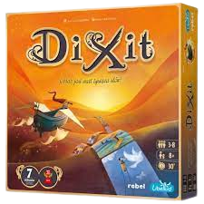
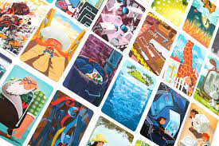
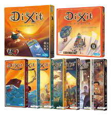
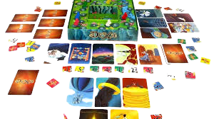

Zasady Gry
Jest to gra w skojarzenia, w każdej z tur jeden z graczy staje się bajarzem. Wybiera jedną ze swoich kart i mówi zdanie, które do niej nawiązuje. Pozostali gracze wybierają jedną z własnych kart, która najlepiej pasuje do zdania bajarza. Następnie wszystkie wybrane karty są mieszane i zadaniem pozostałych graczy jest odgadnięcie, która z nich należała do bajarza.
Dodatki i odmiany
- W 2010 został wydany dodatek pod nazwą Dixit 2, znany również pod nazwą Dixit Quest, w którym znajdują się 84 nowe karty. Dla osób, które kupiły Dixit 2 przedpremierowo, była wydana specjalna promocyjna karta. Niektóre osoby, które kupiły Dixit 2 przedpremierowo, otrzymywały również inną specjalną promocyjną kartę. Karta ta również była rozdawana na GenCon 2010.
- W 2011 została wydana samodzielna odmiana gry pod nazwą Dixit Odyssey (Odyseja), w którym znajdują się 84 nowe karty, 12 pionków gry oraz nowe karty głosowania umożliwiające grę 12 osobom. Dla osób, które kupiły Dixit Odyssey przedpremierowo była wydana specjalna promocyjna karta.
- W 2012 została wydana samodzielna odmiana gry pod nazwą Dixit: Journey, w którym znajdują się 84 nowe karty, 6 pionków gry oraz karty głosowania umożliwiające grę 6 osobom. W Europie gra ta została wydana jako dodatek pod nazwą Dixit 3 a nie jako samodzielna gra. W 2012 była rozdawana dodatkowa karta promocyjna na GenCon 2012.
- W 2012 został wydany dodatek pod nazwą Dixit 3: Journey (Podróże), w którym znajduje się 81 kart z gry Dixit: Journey oraz 3 powtórzone z Dixit, Dixit 2 i Dixit Odyssey (w wydaniu USA) lub 3 nowe karty Dixit Asmodee (w wydaniu europejskim).
- W 2012 zostały wydane 3 karty pod nazwą Dixit Asmodee Special Cards. Są to karty z europejskiej wersji Dixit 3 dostępne osobno w USA.
- W 2012 została wydana nowa gra pod nazwą Dixit Jinx. Jest to nowa gra z rodziny Dixit, ale ma nieco odmienne reguły gry.
- W 2013 został wydany dodatek pod nazwą Dixit Odyssey (expansion), w którym znajdują się 84 karty pochodzące z samodzielnej gry Dixit Odyssey.
- W 2013 został wydany dodatek pod nazwą Dixit 4: Origins (Początki), w którym znajdują się 84 nowe karty.
- W 2013 została wydana karta promocyjna do Dixit 4 pod nazwą "La Machine à rêves".
- W 2013 zostały wydane 4 karty promocyjne pod nazwą Dixit: "The Inheritors" promo cards. Są to karty promocyjne dla edycji koreańskiej.
- W 2014 został wydany dodatek pod nazwą Dixit 5: Daydreams (Marzenia), w którym znajdują się 84 nowe karty.
- W 2015 został wydany dodatek pod nazwą Dixit 6: Memories (Wspomnienia), w którym znajdują się 84 nowe karty.
- W 2016 został wydany dodatek pod nazwą Dixit 7: Revelations (Wizje), w którym znajdują się 84 nowe karty. W pierwszych egzemplarzach gry część kart była pozłacana.
- W 2017 został wydany dodatek pod nazwą Dixit 8: Harmonies (Harmonia), w którym znajdują się 84 nowe karty.
- W 2018 został wydany dodatek pod nazwą Dixit: 10th Anniversary (Dixit 9: Edycja jubileuszowa lub Dixit: 10. Rocznica), w którym znajdują się 84 nowe karty stworzone przez autorów kart do poprzednich części.
GALERIA




Instrukcja